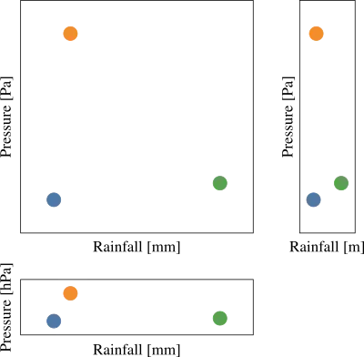
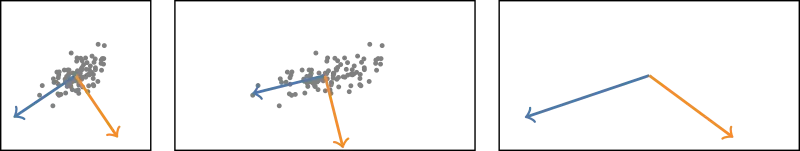
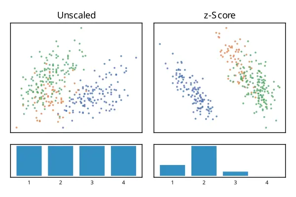
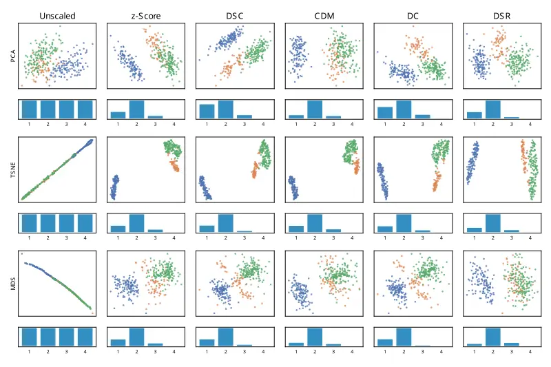

In this post I review and summarize the general concepts and contributions of the Euro Graphics 2025 paper "Towards Scaling-Invariant Projections for Data Visualization" by Dierkes et al. (2025).
Introduction
In their 2025 EG visualization paper, Dierkes at al. aim for visually optimal 2-d scatter plots of high-dimensional data. To this end, the authors utilize dimensionality reduction techniques, such as PCA, t-SNE, and MDS for projecting the high-dimensional data into 2-d space. The outcome of this projection depends on how the data is scaled in original high-dimensional space and may lead to unsatisfactory outcomes. Thus, in parallel to dimensionality reduction, this projection is also optimized for the best data scaling w.r.t. selected quality measures in order to maximize the visual quality of the projection. This method becomes a scale invariant projection, since the used optimization is deterministic and yields the same scaling for the same data. The paper is a clearly and very well written, and well motivated, yet a few open problems remain.
Motivating examples
Three motivating examples show that visual presentation, perception, and interpretation of scatter plots is subject to the chosen data scaling. Also PCA depends on scaling as demonstrated for both 2-d data and higher-dimensional data (4-d).



The data scaling in high-dimensional space depends on e.g. the chosen units or data types. This can be varied and data scaling is assumed to be arbitrary. Hence, which is the optimal data scaling produces the visually best 2-d scatter plot?
Problem formulation
Let \(\mathbf{X} \in \mathbb{R}^{n \times p}\) be a data matrix with p many n-dimensional data points. The scaling matrix \(\mathbf{K} := diag(k)\) with \(\mathbf{k} := (k_1,...,k_n)\) and \(k_i \neq 0\) defines a non-uniform scaling, which applied to the data matrix \(\mathbf{X}\) yields the scaled data matrix \(\mathbf{X}' = \mathbf{K}\mathbf{X}\). Let \(\pi: \mathbb{R}^n \to \mathbb{R}^2\) be some projection from n-dimensional data space into 2-dimensional space. The projection \(\pi\) becomes scale invariant, if before projection, the data \(\mathbf{X}\) is transformed to a common reference scale (independent of its initial scaling) using an optimal rescaling function \(\mathbf{K^*}\), i.e. \[ \mathbf{K^*} (\mathbf{X'}) \mathbf{X'} = \mathbf{K^*} (\mathbf{X}) \mathbf{X} \] for any data \(\mathbf{X}\) and any scaling \(\mathbf{K}\).
Remarks:
- Normalization and standardization are two common examples for such rescalings.
- The application of rescaling, \(\mathbf{K}_a(X) := \mathbf{K^*}(\mathbf{X})\mathbf{X}\), is itself a projection, since \(\mathbf{K}_a \circ \mathbf{K}_a = \mathbf{K}_a\).
The goal is to achieve a visually optimal projection. Given a quality measure \(q\) to assess the visual quality, the component vector \(\mathbf{k^*}\) for the optimal rescaling function \(\mathbf{K^*}\) can be found by maximizing the visual quality \(q\), i.e. \[ \mathbf{k^*} := \underset{\mathbf{k}}{arg\, max} \ q( \pi ( diag ( \mathbf{k} ) \mathbf{X} ) ). \] Which visual quality measures are chosen and how they look like, follows in the next section.
Quality measures
The visual quality measures DSC, CDM, DC and DSR were used, which operate on labeled data, i.e. all data points require a class label. The first three were introduced in Tatu et al. (2009) and Sips et al. (2009), and showed high ranking performance among other measures reviewed in Sedlmair and Aupetit (2015). For reason of brevity, I omit the DC measures’ definition here.
The quality measures assess the visual quality of the projected scatter plots. There are p many 2-d projected points \(\mathbf{x_1},...,\mathbf{x_p} \in \mathbb{R}^2\) with \(m\) associated distinct class labels.
Data Consistency (DSC)
The data consistency measure penalizes points that are closer to another class centroid than their own class' centroid. \[ DSC := \frac{1}{p} \sum CD(\mathbf{x_i}, class(\mathbf{x_i})), \] with centroid distance penalty function applying some distance metric \(d\) \[ CD(\mathbf{x}, c_j) := \begin{cases} 0, & \text{if}\ d(\mathbf{x},centr(c_j) < d(\mathbf{x},centr(c_k)) \ \forall k \in [m], k \neq j \\ 1, & \text{otherwise} \end{cases} \] where \(centr(c)\) gives the centroid of a class label \(c\).
Class Density Measure (CDM)
The class density measures computes the total distance between all point pairs of different classes \[ CDM := \sum_{\substack{i \in C_k\\ k \in [m]}} \sum_{\substack{j \in C_l\\ l \in [m]\setminus [k] }} || \mathbf{x_i} - \mathbf{x_j} || \] where \(C_k\) is the set of all indices of points belonging to class \(k\).
Data Space Ratio (DSR)
The data space ratio is inspired by Tufte's data/ink ratio for data visualization. For this, the projected points are binned into a grid of bin size \((w,h) \in \mathbb{R}_{>0}^2\) that covers the domain with equal amount of bins per dimension. The DSR is given by \[ DSR := \frac{100}{n} \sum_j sgn(p_j) \] where \(p_j\) counts the points in the bin j.
Implementation
The derivative-free Nelder-Mead algorithm is employed for optimization, because not all quality measures above are differentiable, DSC and DSR are not even continuous. Non-linear optimization is generally sensitive to the initial starting point. Using z-score standardization a unique canonical starting point is obtained. This ensures the optimization and rescaling remain deterministic, and maintains scale-invarience of the Nelder-Mead optimization steps. For DSR 100x100 bins have been chosen equidistantly per dimension, and for DC 100 equally sized bins have been chosen.
Results
The proposed method produces unique deterministic scaling invariant projections with generally improved scatter plot visualization, better perception and easier interpretation in the shown examples. Here, I show only results for two out of the four example datasets used in the paper.


For very large datasets with many dimensions and many classes, performance was reported to be an issue. Hence, quality measures and the optimal rescaling for the Covertype dataset were computed only on a random subset of the data.
Limitations and open problems
The authors openly discuss limitations of their approach. Very high-dimensional dataset remain difficult to visualize, as seen for the Covertype dataset. Also the reported performance is highly dependent on dataset size, rendering the scale optimization for a complete and very large datasets unfeasible.
Except for DSR, the other quality measures require labeled data, and only labeled datasets were considered. What results would this approach achieve using other label-free quality measures?
For the Bankruptcy dataset its nominal data is encoded as integers, but this ordering is arbitrary. Any order of categories is as good as the other, but may affect the scaling. Also categories/integer cannot be used for computations (PCA, optimization, scaling).
How consistent are the projections, when new data is added or data is removed? Suddenly, the projections could look very different. This may also effect the random sub-sampling of the Covertype dataset. Analyzing how much the quality measures change when the underlying dataset size changes could give a first indication.